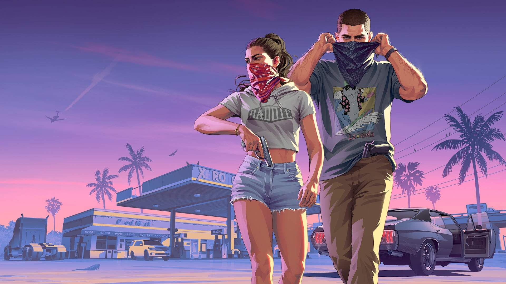

© Rockstar Games / Take-Two Interactive — illustration officielle
À six semaines de la sortie, la campagne de lancement s'accélère
EN BREF
- 5 octobre 2026 : Jason et Lucia en couverture du magazine Love
- 18 novembre 2026 : le Miami HEAT jouera sous le nom « Vice City »
- Une fresque de Jason et Lucia peinte à Brooklyn
- 6 octobre 2026 : Xbox dément une exclusivité de GTA VI en streaming
À un peu plus de six semaines de la sortie du 19 novembre 2026, la promotion de GTA VI change de braquet. Après le dossier Game Informer du 29 septembre, les annonces et opérations se sont enchaînées début octobre.
Jason et Lucia en couverture de Love
Le magazine de mode britannique Love a annoncé sur Instagram un numéro consacré à GTA VI, disponible à partir du lundi 5 octobre 2026, avec Jason et Lucia en couverture. L'annonce était accompagnée de nouvelles captures : le couple dans un restaurant, dans un jardin, et une voiture bleue dans les rues de Vice City.
Les scénaristes Elizabeth Gauvey-Kern et Alexa D'Agostino y décrivent des héros « vulnérables, durs, imparfaits », dont la cavale criminelle est présentée comme pleine d'espoir et un peu naïve (voir notre article sur les protagonistes).
Le Miami HEAT devient « Vice City » pour un soir
L'équipe NBA du Miami HEAT a annoncé le 2 octobre qu'elle jouera son match du 18 novembre 2026 — la veille de la sortie — sous les couleurs de « Vice City ». La rencontre contre les Milwaukee Bucks, à 19h (heure de Miami) au Kaseya Center, se jouera sur un parquet spécial et avec un maillot créé pour l'occasion. Des produits dérivés sont déjà en vente sur une boutique officielle, et d'autres animations doivent être annoncées.
Une fresque géante à Brooklyn
Le 1er octobre, des fans ont repéré des peintres en train de réaliser une fresque murale représentant Jason et Lucia dans le quartier de Brooklyn, à New York. Rockstar a aussi envoyé des colis promotionnels (sac en toile rose, autocollants) à des médias et des créateurs de contenu.
Streaming : la rumeur démentie par Xbox
Le 6 octobre, The Verge a affirmé que Xbox avait obtenu l'exclusivité de GTA VI en streaming au lancement, ce qui aurait permis d'y jouer sur PC via le cloud. Le jour même, Matthew Ball, directeur de la stratégie de Xbox, a démenti : le jeu sortira bien sur Xbox le 19 novembre, mais ne sera ni en streaming exclusif, ni disponible sur PC. Plus de détails dans notre article sur les plateformes.
À surveiller
Rumeur non confirmée : selon un datamining relayé par GamingBible, le jeu exigerait le firmware PS5 14.10.00.00 (mise à jour anti-jailbreak). Ni Sony ni Rockstar ne l'ont confirmé.
Aucune nouvelle bande-annonce n'a été annoncée à ce jour. Nous mettrons cet article à jour au fil de la campagne.